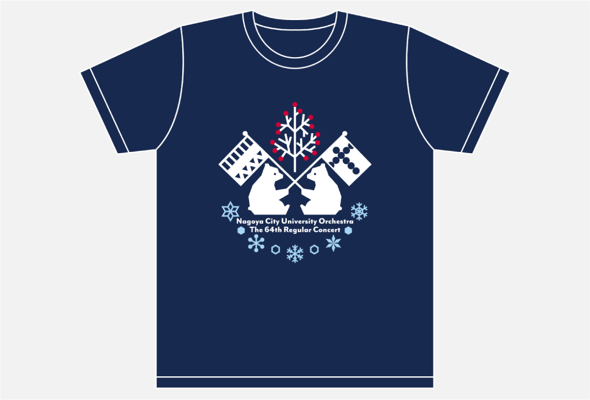

GotoAyaka's
PORTFOLIO

団内グッズ
演奏会Tシャツ2019
制作期間
2019.7
担当範囲
デザイン
使用言語・ツール
Illustrator
制作背景
自分の所属する管弦楽団の団内グッズとして2019年の演奏会Tシャツを作りました。
制作する時点で次回の演奏会の曲目がメインの曲がシベリウスで前プロがボロディンとチャイコフスキーに決まっていたので、フィンランドとロシアの国獣であるクマがそれぞれの国旗をイメージした旗を持っているデザインにしました。
Tシャツの色は他のメンバーからの投票で白、ネイビー、黒に決まっていたので、どの色にも合うように配色しました。
夏合宿の時や普段の練習の時だったり、演奏会のある冬まで中に長袖を着るなどして長く着てもらえました。